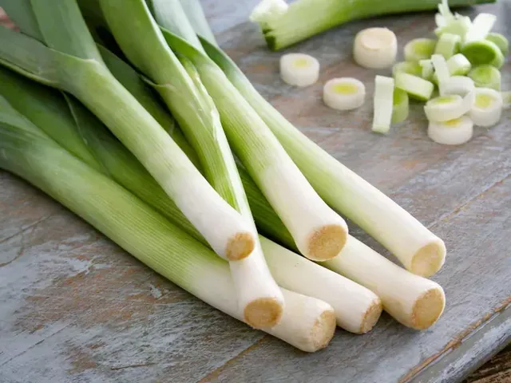

Por je posevek za potrpežljiv načrt, saj do uporabnih stebel potrebuje dalj časa kot solata ali redkvica. Smiselno je začeti s sadikami in že ob nakupu izbrati sorto za poletno, jesensko ali zimsko pobiranje. Raste lahko tudi v globlji posodi, vendar bo pridelek zaradi omejenega prostora skromnejši. Prezimna odpornost ni enaka pri vseh sortah, zato zimsko pobiranje načrtujte le z ustrezno izbranim posevkom.
Vzgoja sadik in presajanje
Za lastno vzgojo sejemo v notranjem prostoru pozimi ali zgodaj spomladi, v skladu s sorto. Globina setve je približno 1 cm. Sadike potrebujejo dovolj svetlobe in postopno privajanje na zunanje razmere.
Na gredo jih presajamo, ko so primerno razvite in razmere dovoljujejo. Okviren razmik je 10–15 cm v vrsti in 25–30 cm med vrstami. Zemlje ne nasipajte v osrednji del rastline.
Nega in gojenje v globoki posodi
Zalivajte redno, posebej po presajanju in ob suši. Odstranjujte plevel, preden rastline preraste. Če por osipavate za daljši obeljen del, to počnite postopoma in ohranite sredico čisto.
V načrtovalniku je manjša skupina treh do štirih sadik umeščena v najmanj 15 l in 30 cm globine zemlje. Posoda mora odvajati vodo, med rastlinami pa ostane potreben razmik.
Pobiranje glede na sorto
Začetni okvir dvajsetih do štiriindvajsetih tednov je le približek. Pobirajte, ko steblo doseže uporabno debelino. Poletnih sort ne puščajte na gredi v pričakovanju enake odpornosti kot pri zimskih.
Pred dviganjem zrahljajte zemljo, da stebla ne pretrgate. Med listnimi ovoji se lahko skriva zemlja; por pred pripravo razprite in temeljito sperite. Za zimsko pobiranje preverite tudi dostopnost tal ob zmrzali.
Informativni vodnik za osrednjo Slovenijo. Termine, velikost posode in razmike prilagodite sorti, vremenu in navodilom dobavitelja. Podatki niso napoved dejanskega datuma pobiranja.
Pogosta vprašanja
Ali vsak por prezimi na vrtu?
Ne. Odpornost je odvisna od sorte, starosti rastline in razmer. Za zimski posevek izberite sorto, pri kateri je tak namen izrecno naveden.
Ali moram kupiti sadike?
Ne, por lahko vzgojite iz semena, vendar potrebuje čas in svetel prostor. Sadike so priročne za majhen začetniški posevek.